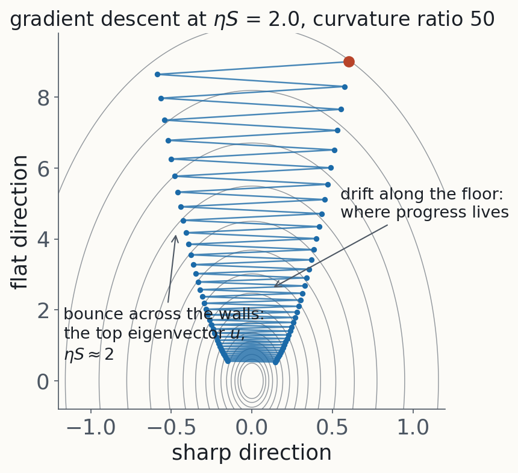
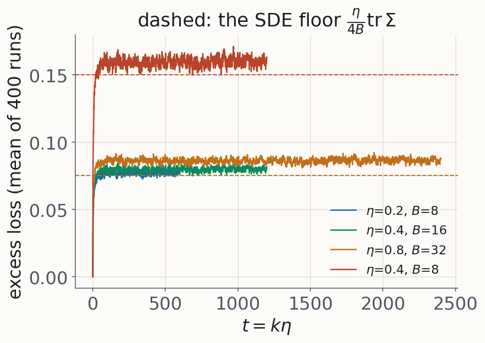
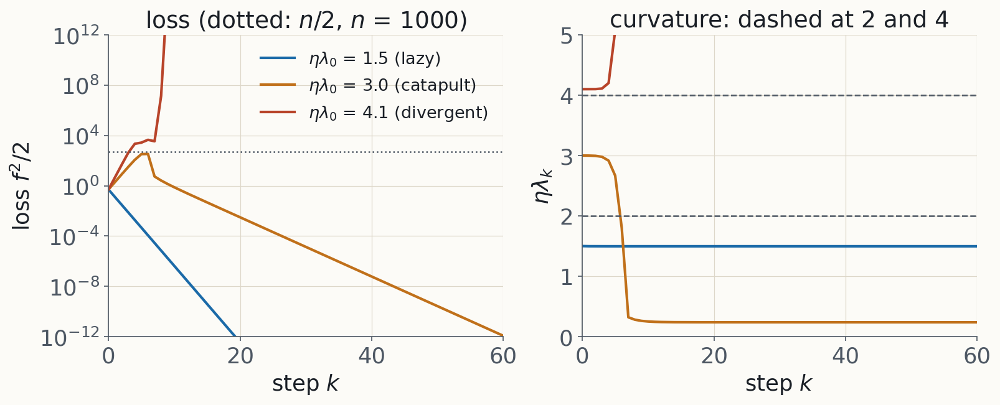
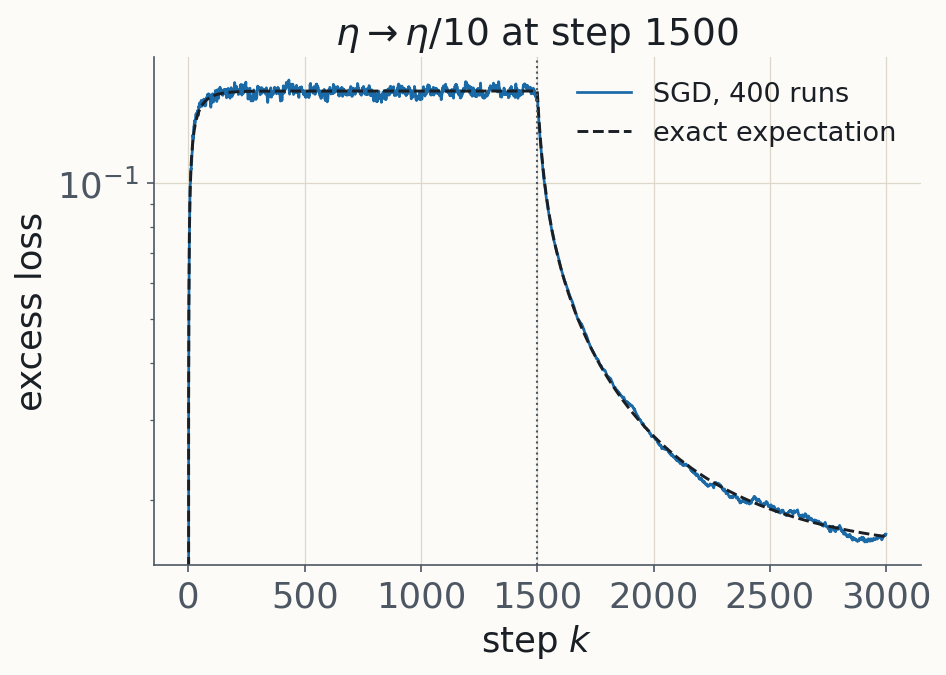
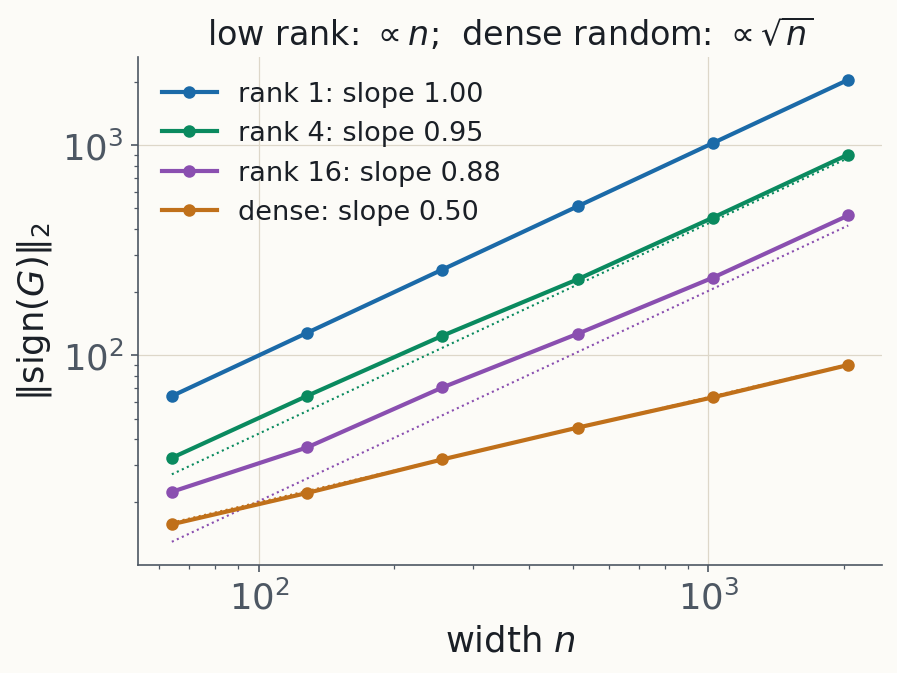
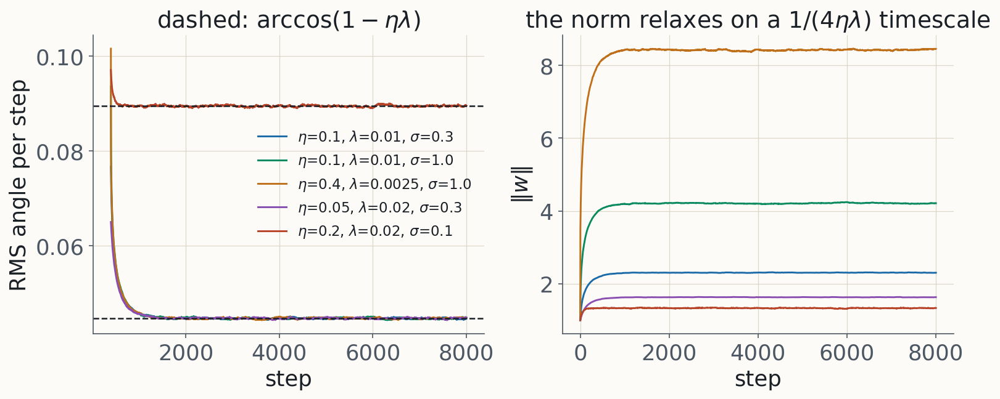
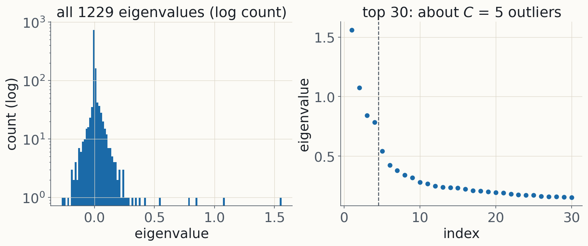

What the knobs of a training run do, and which derivation stands behind each one
learning rate · batch size · schedule · optimizer · width · normalization and weight decay · what they act on
Two kinds of tools, one picture
1. Small-step expansions. Treat training as a flow plus corrections, or as a stochastic differential equation. The expansion parameter is $\eta S$. These give the scaling rules.
2. Where they break. Real training sits at $\eta S\approx2$, exactly where "small step" fails, and different tools take over.
Keep this valley on the board. The bounce across the walls is the top eigenvector; progress is the drift along the floor. Segments on the learning rate, the schedule, curvature and what is learned first all come back to it.

§1 · Learning rate as a step size
Gradient descent follows a modified flow that penalizes the gradient norm
GD's gradient doesn't shrink along a step, so each step overshoots by $-\tfrac{\eta^2}{2}Hg$. As a drift, that is the penalty: implicit gradient regularization.
Asymptotic series. Degrades smoothly as $\eta S$ grows; no flow at all once $\eta\lambda\ge1$ in some direction.
$L=\tfrac12(ab-1)^2$ from $(2,0.1)$. Gradient flow conserves $a^2-b^2$; GD shrinks it, and the IGR flow (dashed) accounts for 81%, 42% and 16% of the shift at $\eta S\approx0.2$, $0.8$, $1.4$.
Holding $\eta/B$ fixed holds the SDE fixed: the linear scaling rule.
In a basin the floor is $\tfrac{\eta}{4B}\mathrm{tr}\,\Sigma$, with no $H$ in it.
A one-step Taylor model gives the critical batch $B_{\rm noise}=\mathrm{tr}(H\Sigma)/(g^\top Hg)$, past which larger batches buy almost nothing.
Adam: temperature $\eta/\sqrt B$, hence a square-root rule.

Diagonal quadratic, Gaussian gradient noise. Same $\eta/B$, same floor, until $\eta h$ stops being small in the top mode ($\eta=0.8$ sits above the line).
td2_2_sgd_sde §2.1–2.6 (Li, Malladi & Arora; McCandlish et al.; Malladi et al.), §2.7 validity
§3 · Where the expansions break: the edge of stability
Sharpness rises to $2/\eta$ and stays there while the loss keeps falling
Tanh MLP, 256 random labels, full-batch GD. All three runs follow the same curve in $t=k\eta$ until each hits its own $2/\eta$. The $x^2$ term survives the period-2 average: self-stabilization.
td2_3_edge_of_stability §3.1–3.4 (Cohen et al.; Damian, Nichani & Lee; central flows, Rod Flow)
§3 · Where the expansions break: the catapult
A large step can lower the curvature in one shot

Width-$n$ two-layer net, one input, exact maps. $\eta\lambda_0<2$ lazy; $2<\eta\lambda_0<4$ the loss spikes, the curvature drops, training converges somewhere flatter; $\eta\lambda_0>4$ diverges.
Contrast with the edge of stability: self-stabilization is a sustained hover, the catapult a one-shot drop with nothing pushing the curvature back up.
The $4/\lambda_0$ edge is specific to this model; ReLU nets in the paper tolerate up to about $12/\lambda_0$.
td2_3_edge_of_stability §3.7 (Lewkowycz et al.)
§4 · Schedule
Both ends of a schedule have a mechanism, and each end has more than one
Warmup. Edge-of-stability account: starting at the target $\eta$ from a sharp initialization catapults or diverges; ramping lets $S$ follow $2/\eta(t)$ down. Adam account: early $\hat v$ is estimated from few samples, so the adaptive step has high variance.
Decay. Three pictures of one observation, that the loss drops when $\eta$ is cut: the fluctuation floor $\tfrac{\eta}{4B}\mathrm{tr}\,\Sigma$; Wen et al.'s river valley, where noise bounces the iterate between the hillsides and hides progress along the river; an edge-of-stability analogue, where the measured loss is $L+\sigma^2/\eta$.

Same quadratic. The dashed line is the exact expectation, not a fit. The target drops tenfold at once; the loss follows mode by mode at rates $2\eta'h_j$.
Euclidean: GD. $\ell_\infty$: sign descent (Adam with its averages off). Fisher norm: natural gradient. Spectral norm on a weight matrix: $UV^\top$, which Muon approximates by Newton–Schulz.
Every optimizer is steepest descent under some norm, so the dictionary explains nothing on its own. A norm earns its place by parametrization invariance or by step sizes that transfer across width.
td2_4_optimizer_geometry §4.0–4.4 (Bernstein & Newhouse; Martens; Jordan et al.)
§6 · Width
Which step sizes transfer across width? A spectral condition answers, and gives muP
Gradient updates are low-rank and aligned with the incoming features, so their spectral norm measures their effect on the activations.
For low-rank $G$, $\|\mathrm{sign}(G)\|_2=\Theta(\sqrt{n_ln_{l-1}})$, so Adam needs $\eta_l=\Theta(1/\text{fan-in})$: muP's rule. Muon's $\|UV^\top\|_2=1$ gives $\eta_l=\Theta(\sqrt{n_l/n_{l-1}})$ directly.
A dense random sign matrix would give only $\Theta(\sqrt n)$: the structure of the gradient sets the exponent.

$\|\mathrm{sign}(G)\|_2$ against width, $G$ of rank 1, 4, 16 and dense Gaussian. Dotted: $\mathbb E|w_1|\,n$ and $2\sqrt n$.
td2_4_optimizer_geometry §4.5 (Yang, Simon & Bernstein), §4.6 the modular norm
§7 · Normalization and weight decay
Behind a normalization layer the loss sees only a direction. Weight decay sets the step it takes.
The gradient is tangent, so a step lengthens $w$ by Pythagoras; without decay the norm only grows and the effective step decays like $1/\sqrt k$.
Weight decay pulls radially in. At equilibrium each block rotates by a fixed angle $\theta^*\approx\sqrt{2\eta\lambda}$ per step, whatever its gradient scale.
On scale-invariant weights, weight decay is a learning-rate schedule, not a regularizer of the function. Li & Arora: exactly equivalent to an exponentially increasing $\eta$.

Noisy scale-invariant toy, SGD. Four settings share $\eta\lambda=10^{-3}$ and end at the same angle; the norm relaxes on a $1/(4\eta\lambda)$ timescale, often a sizeable part of a schedule.
td2_5_normalization_weight_decay §5.1–5.2 (Kosson et al.; Li & Arora; D'Angelo et al.)
§7 · Loss spikes and clipping
Four documented spike mechanisms, sorted by whether they are an edge-of-stability crossing
Mechanism
Edge crossing?
Fix
Weight decay shrinks a normalized layer until $\eta_{\rm eff}S$ crosses 2
yes
schedule $\eta\lambda$; watch $\|w\|$
Adam's second moment goes stale, so the preconditioned sharpness crosses $38/\eta$
yes
$\beta_2$, $\epsilon$ (Bai et al.; Molybog et al.)
Attention-logit growth
no
QK-layernorm
Output-logit drift along a flat direction
no
z-loss
Clipping. Under $(L_0,L_1)$-smoothness, where curvature grows with the gradient norm, the right step is $\propto1/\|\nabla L\|$ where the gradient is large. That is clipping.
td2_5_normalization_weight_decay §5.3 spikes, §5.4 clipping (Zhang et al.)
§8 · What the knobs act on: curvature
The Hessian is a bulk at zero plus about $C$ outliers. The gradient lives in the outliers; progress mostly doesn't.

GELU MLP, 1229 parameters, $C=5$ Gaussian classes, cross-entropy, stopped at loss 0.24. Full eigh.
$H$ = Gauss–Newton + residual. The Gauss–Newton part shares its nonzero spectrum with the loss-weighted tangent kernel, so progressive sharpening with square loss is the kernel moving.
The outliers are tied to class means of gradients.
A step along a direction of curvature $\lambda$ gains $\Delta L=-\eta g^2(1-\eta\lambda/2)$: at the edge the gain cancels. The top subspace is the bounce; the drift along the floor lives in the bulk.
The basin is chosen early, when the kernel moves fastest.
td2_6_curvature §6.1–6.5 (Sagun et al.; Papyan; Song, Ahn & Yun; Fort et al.; Frankle et al.)
§8 · What the knobs act on: order of learning
Low-order statistics first, then the rest, at a sample cost set by where the signal hides
Moments before cumulants. A model linear in its inputs sees only the first two moments, so a network with small pre-activations learns from Gaussian-equivalent statistics first. Train on the data and on its Gaussian clone: the early curves coincide.
The price of a hidden direction. A direction visible only in the $k$-th cumulant costs about $d^{\,k-1}$ samples for information exponent $k\ge3$, far fewer if it correlates with lower-order structure.
Spectral bias. A fixed kernel fits eigenfunction $k$ at rate $\lambda_k$: low frequencies first.
If L1 was skipped: shallow, $\dot a=s-a$; two-layer from small balanced init, $\dot a=2a(s-a)$, so the strongest structure first, after a plateau.
td2_7_learned_first §7.1–7.3 (Refinetti et al.; Bardone & Goldt; Basri et al.)
§9 · Menu
Pick a knob. Each notebook stands alone, opens with its readings, and the derivations follow.
Knob or question
Notebook
Core reading
Learning rate as a step size: flows, IGR, momentum
td2_1_flows
Barrett & Dherin
Batch size: SMEs, loss floor, critical batch, linear and square-root rules, validity
td2_2_sgd_sde
Li, Malladi & Arora
Where the expansions break: EoS, central flows, Adam's and SGD's edges, catapult, warmup and WSD
td2_3_edge_of_stability
Cohen et al.
Optimizer and width: norms, natural gradient, Adam as sign descent, Muon, muP
td2_4_optimizer_geometry
Bernstein & Newhouse
Normalization, weight decay, spikes, clipping
td2_5_normalization_weight_decay
Kosson et al.
What the Hessian looks like; when the basin is chosen
Less background. NB1 §1, §4 and §5 (mode equations, the kernel, lazy versus rich), then td2_1 and td2_2. Flows and SDEs are one story: backward error analysis, first for the step and then in distribution.
More background. Skim NB1, then any NB2 notebook. td2_3 and td2_6 are where the expansions break and the empirical phenomenology lives.
Out of scope today: whether SGD samples a Bayesian posterior (MDL day, WB2 §8); infinite-width NTK theory (Physics of Deep Learning day); measuring curvature at scale (DA day, L2).